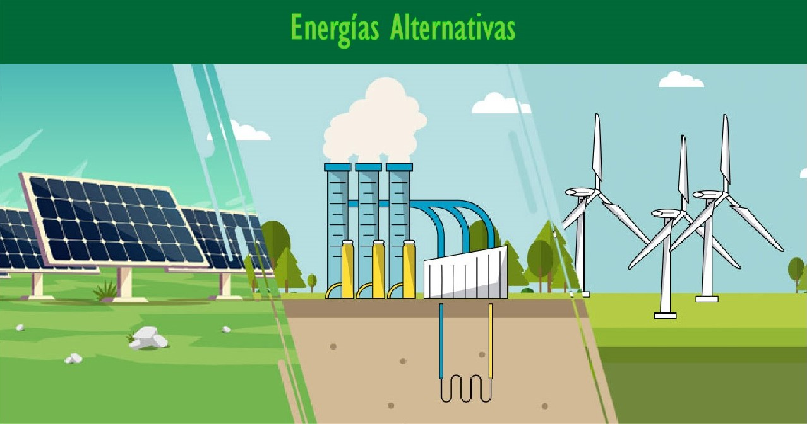
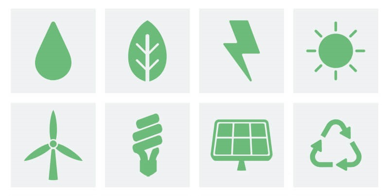

Su aprovechamiento provoca una afección muy baja al medioambiente. No se generan residuos.
Son fuentes de energía ilimitadas, por ello también se las conoce como fuentes de energía inagotables,
ya que no se agotan con su consumo.
Se trata de fuentes de energía autóctonas.

¿QUÉ SON LAS ENERGÍAS ALTERNATIVAS?
Se trata de energía limpia, energía verde o energía renovable. Se consideran fuentes alternativas a las tradicionales o clásicas ya que provienen de recursos naturales y de fuentes inagotables, que al producirlas, no contaminan.
CARACTERÍSTICAS
Las fuentes de energía renovables se caracterizan por lo siguiente: